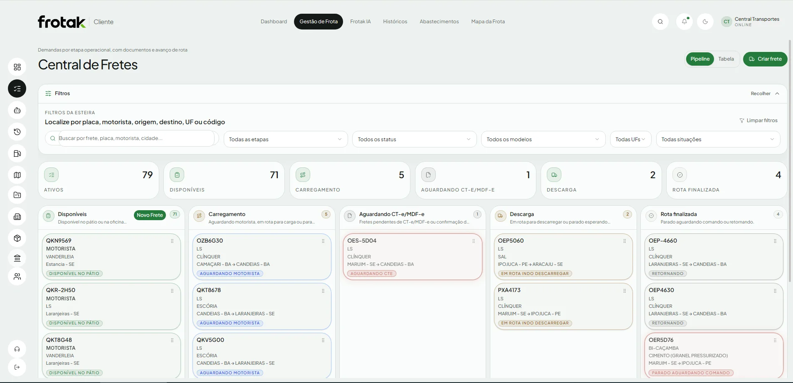
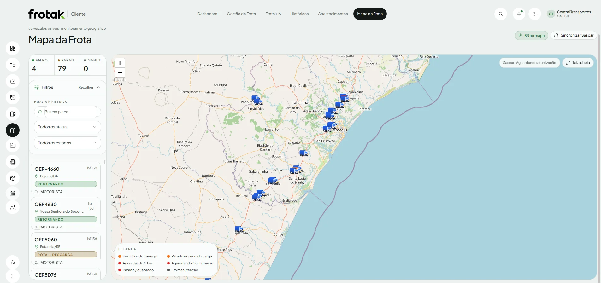
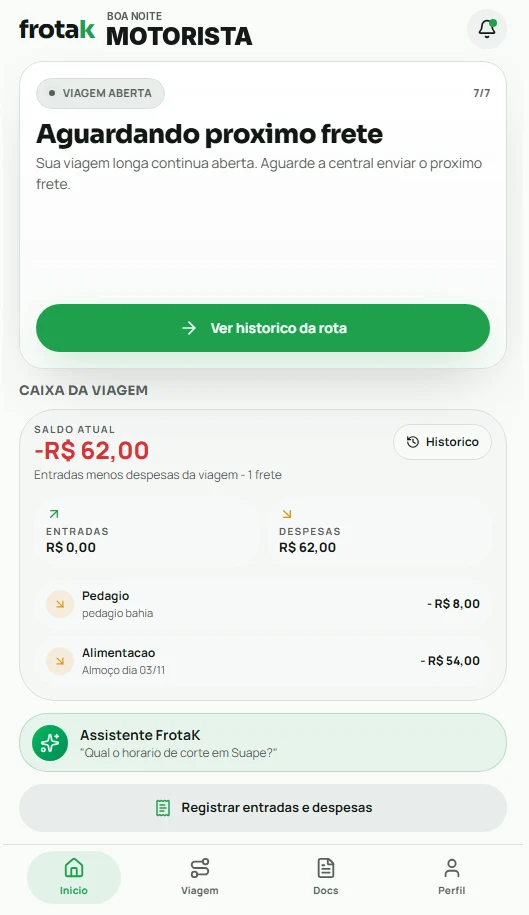
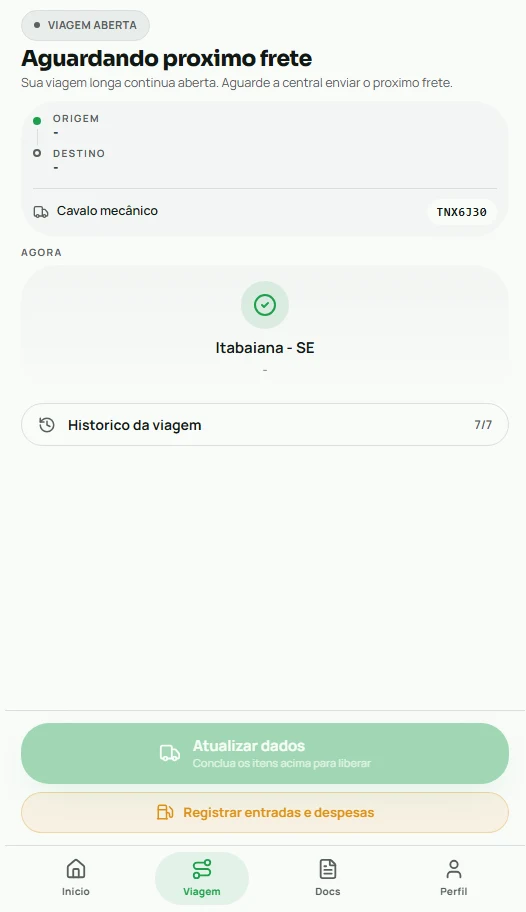

Planilha que ninguém atualiza
Cada setor tem a sua versão. Na hora de decidir, ninguém sabe qual está certa.
Retrabalho no escritórioFrota, fretes, abastecimento e financeiro no mesmo painel, com alertas no celular e a Frotak IA respondendo por voz sobre a sua operação. Menos planilha, menos ligação pro motorista, mais caminhão rodando.
Recriação animada da Central de Fretes. Placas e rotas são ilustrativas.
Se dois ou mais desses sinais fazem parte da sua semana, a gestão está custando dinheiro sem aparecer na planilha.
Cada setor tem a sua versão. Na hora de decidir, ninguém sabe qual está certa.
Retrabalho no escritórioPosição, status e previsão dependem de alguém atender o telefone na estrada.
Tempo do gestorVocê descobre no fim do dia que um veículo ficou horas sem rodar. Frete que não entrou.
Faturamento perdidoDiesel, manutenção e frete ficam em lugares diferentes. O caminhão que pesa no bolso passa despercebido.
Consumo fora de controleRastreador num lugar, documentos em outro, financeiro em outro. Relatório leva dias pra sair.
Decisão atrasadaCada caminhão aparece na etapa em que está, do pátio até a rota finalizada. Você bate o olho e sabe quem está disponível, quem está carregando e quem espera documento.

Todos os caminhões no mapa com a etapa de cada um em cores. Sem trocar de sistema e sem ligar pro motorista para saber onde ele está.

O motorista registra Diesel S10 e Arla pelo celular. A Frotak calcula o km/l e monta o ranking de eficiência da frota, do melhor para o pior.
Fale ou digite como você falaria com o seu gerente de tráfego. A Frotak IA consulta os dados da sua operação e responde na hora, sem abrir relatório e sem esperar o financeiro.
Informe quantos caminhões você tem e veja na hora uma estimativa de quanto a Frotak ajuda a economizar.


Quem está na estrada tem a informação que o escritório precisa. No app da Frotak, o motorista lança despesas, acompanha a viagem e tira dúvidas, e tudo chega na central na mesma hora.
Feita por quem vive transporte, com o vocabulário da operação: placa, motorista, rota, CT-e e MDF-e.
Nada de sistema genérico adaptado. Cada tela foi pensada para o gestor de frota decidir rápido.
Ver uma demonstraçãoFrota, fretes, documentos, abastecimento e financeiro no mesmo sistema.
Alerta no celular quando um caminhão passa do tempo parado, sem esperar o fim do dia.
Abastecimentos e informações chegam do celular do motorista direto para o painel.
A Frotak IA responde perguntas sobre a operação sem você abrir um relatório.
Chame o comercial no WhatsApp. A gente refaz o simulador com os números da sua operação e mostra a Frotak funcionando.